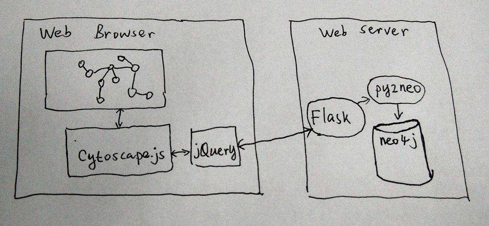
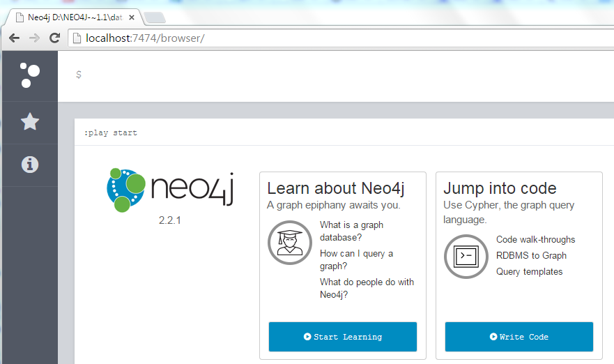
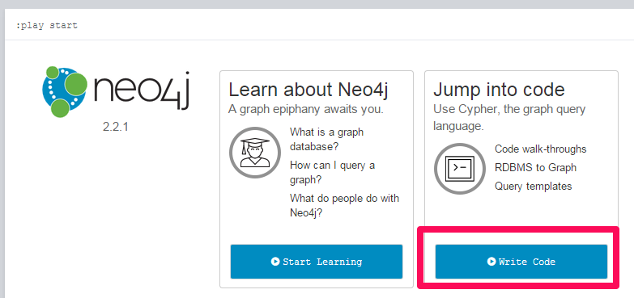
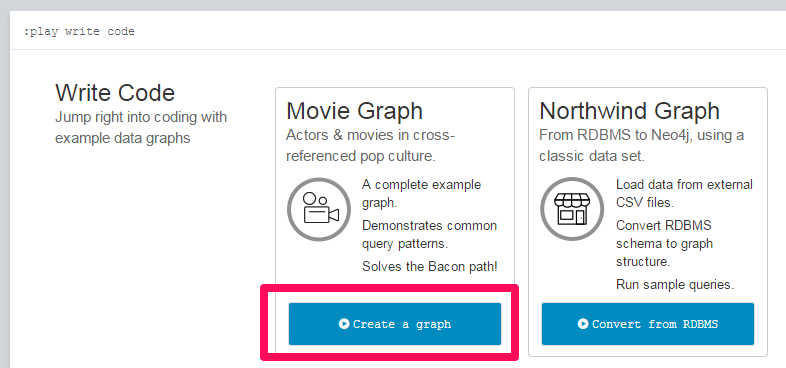
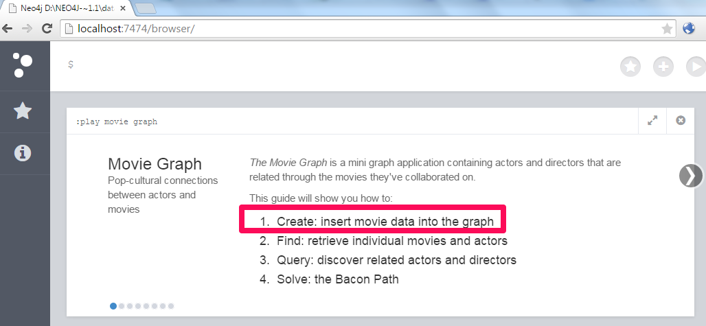
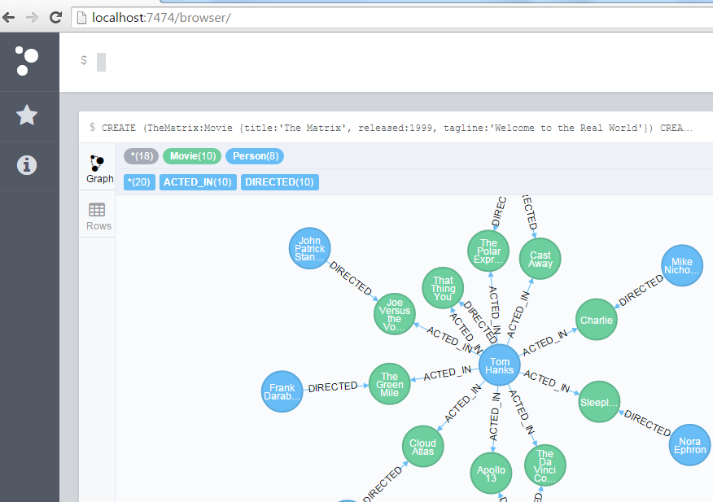
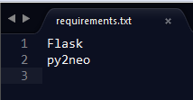
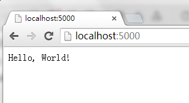
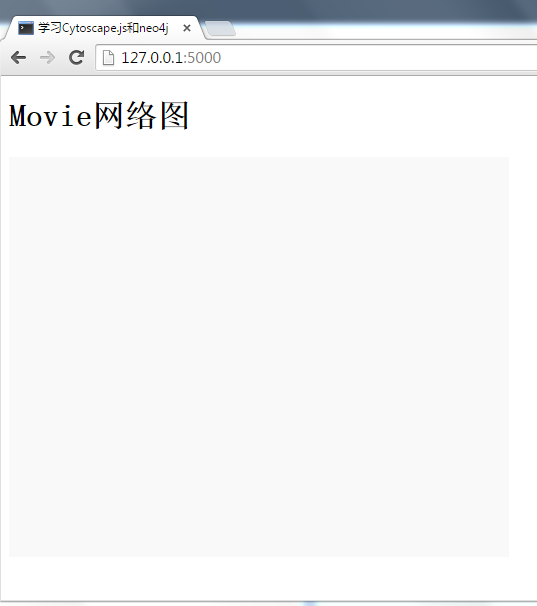

用可视化的方式来展示网络关系图是一件挺有趣的事情，在选定用cytoscape.js来显示neo4j图形数据库的数据后我做了一个原型，并用下面三篇博客来记录了做原型的过程。
- 用cytoscape.js展示neo4j网络关系图 - 1. Flask
- 用cytoscape.js展示neo4j网络关系图 - 2. py2neo（这篇博客）
- 用cytoscape.js展示neo4j网络关系图 - 3. cytoscape.js
要解决的问题
最近在找一种可视化方案来显示IT网络中的节点（PC，服务器，路由器，人）之间的关系。经过一系列的调研，初步选定如下方案。
使用的方案
- 后端
- 前端
- cytoscape.js，显示节点及节点间的关系
- jQuery.js, AJAX必须用的库
- 开发平台
整体的架构如下：

开发环境搭建
neo4j
首先要去neo4j下载community免费版， 我用的是neo4j-community_windows-x64_2_2_1.exe 。
安装后，为了简化开发，我们先把neo4j的用户鉴权关掉。这需要修改C:\neo4j-community-2.2.1\conf\neo4j-server.properties，把dbms.security.auth_enabled=true改成dbms.security.auth_enabled=false。修改后双击C:\neo4j-community-2.2.1\bin\Neo4j.bat启动neo4j server。
在浏览器里访问http://localhost:7474/，如果看到下图就证明neo4j安装成功了。

鉴于我们只是做一个prototyping，就不用真实的IT节点数据，直接用neo4j自带的Movie数据来做原型。照着下面的步骤做完，把Movie数据插入到neo4j库。
点击“Write Code”
点击“Create a graph”
按照指示做完第一步，你应该能看到网络图显示出来了


Flask, py2neo
首先确认你已经安装了Python 2.7.x。然后还需安装Flask和py2neo。这两个Python包的安装可以用requirements.txt文件的方式安装。你可以写一个如下的文件

然后用pip命令来安装requirements.txt里面列出的python包。
1 | C:\>pip install -r requirements.txt |
前端的cytoscape.js和jQuery.js
它们只是些javascript文件，后面会讲到如何下载及把它们放到什么地方。
要完成的功能
要把neo4j数据库里面的Movie数据正确的显示到前端，我们需要完成如下的任务。
- 搭建基于Flask的简单网站 (这篇博客)
- 用py2neo来获取neo4j的节点及关系
- 用cytoscape.js来显示网络关系图
开始写代码
以上我们完成了开发环境安装及其功能设计，可以开始最开心的coding阶段啦。大家可以在我的Github上找到下面讲到的所有源代码。
搭建基于Flask的简单网站
让我们来搭建一个基于Flask的简单网站。首先创建如下目录：
1 | C:\>mkdir cytoscape_neo4j |
完成后的目录结构如下
1 | C:\cytoscape_neo4j |
cytoscape_neo4j目录用来放后台Python代码（整个项目就一个python文件，app.py）。static目录用来放网站的静态文件，如javascript/css文件。templates目录用来存放网页（整个项目只有一个网页，index.html）。
现在来写Flask应用程序app.py(源代码： cytoscape_neo4j/app.py).
1 | # coding=utf-8 |
6到8行代码的意思是：如果用浏览器访问根目录”/“，app.py就会发送”Hello, World!”到浏览器。让我们来启动我们的Flask应用。在Windows命令行下输入如下命令。如果看到Running on http://127.0.0.1:5000/的提示就表示Flask网站运行起来了。
1 | C:\>cd cytoscape_neo4j |
可以在浏览器里访问http://localhost:5000，就能看到”Hello, World!”正常显示出来了。

Hello World正常运转后，我们来把它完善一下，做成一个真正满足我们功能要求的网站（也就是添加需要的html/Javascript/css文件了）。网站最后的目录结构是这样的。
1 | C:\cytoscape_neo4j |
index.html是我们唯一的网页。cytoscape.min.js是cytoscape必须的Javascript库。AJAX当然少不了jquery-1.11.2.min.js。code.js是我们的前台程序，它调用cytoscape.min.js在前台生成网络关系图。style.css是我们自定义的样式表，cytoscape.min.js会读它来初始化网络关系图的样式（比如：画布的宽度，高度）。app.py前面见过了，是Flask应用程序。
你可以在JQuery的官网下载下载jquery-1.11.2.min.js。
cytoscape的官网可以下载cytoscape.js-2.4.0.zip，解压后我们只需要cytoscape.min.js就好。
现在我们来看看index.html (源代码： cytoscape_neo4j/templates/index.html)
1 |
|
代码第5行引入了我们自定义的style.css样式表。第6，7行引入了刚下载的jquery和cytoscape库。第8行引入我们的前台程序code.js.
在11行我们准备在页面上显示“Movie网络图”。比较特殊的是第12行，这个id="cy"的div将会被cytoscape用做画布来绘制网络关系图。
app.py也需要做一些修改。（源代码： cytoscape_neo4j/app.py）
1 | # coding=utf-8 |
代码6-8行的意思是，如果访问网站的根目录”/“，Flask会返网页cytoscape_neo4j/templates/index.html。
style.css我们将定义画布的大小和背景色。（源代码：cytoscape_neo4j/static/css/style.css）
1 | /* cytoscape graph */ |
index.html里面定了<div id="cy"></div>，所以css里用#cy来做选择器。style.css里我们定义画布的宽度500px，高度400px，颜色是灰色。
code.js目前用不上，建一个空文件就行。
现在可以看看我们修改的效果了。按如下步骤启动app.py。
1 | C:\>cd cytoscape_neo4j |
在浏览器里访问http://localhost:5000应该可以看到下图，一行标题Movie网络图，加下面一个500x400的灰色画布。

到此，我们的基本工作都完成了。下一个博客会讲到如何用py2neo来查询neo4j获取需要的节点和节点之间的关系。